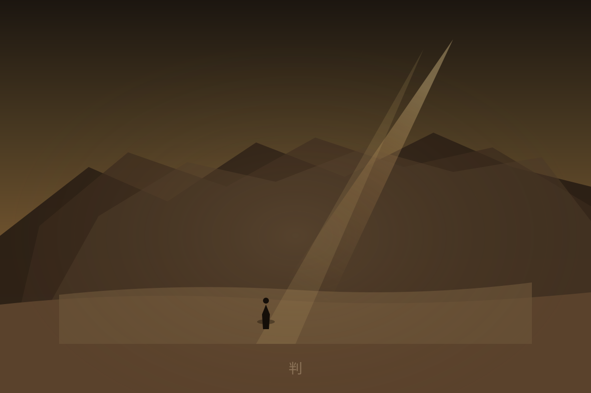

判
夜里的判
今天是星期三，日历上写着11月25日。西安市气象台预报今天晴间多云，最高约十五到十七度，最低接近零度，昼夜温差大，空气干燥，局部有阵风。这篇落笔是夜里十点过后。对美东是星期三上午，市场已经开盘。孩子一岁多，他不认星期三，也不认判，只认楼道灯什么时候亮，什么时候该睡觉。今天白天他没怎么出门，因为干冷，鞋底干净。散打馆开着，有人在垫子上出拳，铁皮屋顶有一点风声，地面干燥。啤酒吧和游戏机仍停在计划里，没有地址，没有开业日，不提前写成店。
西安今晚预报大体对齐。白天最高十七度附近，今夜最低接近四到五度，明天继续晴间多云，最高或到十八九度。月是盈月，能见度好。判是过了的薄之后的继续，不是已经停了。空气里有一点干冷，呼吸时能感觉到。楼道灯按时亮，门口那双小鞋还没穿，地面有一点薄尘。冷空气把白天的热气散干净了，夜里的空气更透，远处的灯看起来更远也更清楚。星期三的夜里，世界的新闻还在滚动，家里的灯已经亮了，孩子的呼吸已经匀了，这些是同一时间里的不同层。
决定之后的第七十天。薄之后的第一场判。数字只是日历上的痕迹，真正走下来的是天、是路、是还没落地的计划。余温不急着把它们写成已经到了的东西。星期一的夜里已经过去，今天的夜里刚刚开始，仓位还在账上，故事还没写完。
世界的判
布鲁克林联邦法院的陪审团在持续三个月的审判后，认定华为技术有限公司及其三家子公司在十二项指控中的十项有罪。罪名包括密谋窃取商业秘密、密谋实施电信与银行欺诈、电信欺诈、银行欺诈、密谋欺骗美国、违反《国际紧急经济权力法》及其实质违规，以及洗钱密谋。陪审团裁定组织犯罪阴谋与妨害司法两项无罪。美国司法部称，被告数十年来秘密协助伊朗政府、从美国公司窃取机密、向银行与国会撒谎并洗钱。华为通过名为“天际”的实体在伊朗开展业务，并向银行隐瞒其与伊朗政府、军方及情报部门的联系。在商业秘密方面，检方举证华为工程师复制思科路由器源代码，并以“ocsic”反向命名残留代码；亦有员工在与T-Mobile签署保密协议后窃取测试机器人“Tappy”相关信息。量刑定于2027年9月14日，届时可能面临刑事罚款、没收与赔偿。华为方面对组织犯罪无罪表示欢迎，称其余指控缺乏事实基础。这不是已经结束的案子，是陪审团在证据面前给出的一层判，罚金与后续诉讼还在路上。
也门胡塞武装无人机再度袭击沙特利雅得的阿卜杜拉国王金融区，沙特民防称一架无人机击中一座塔楼，十一人受伤。这是一周内的第二次。冲突的边缘仍在向外延伸，判不是把无人机打下来，是把今天这一层的烟留下来，让它在冷空气里暂时可见。
酒泉卫星发射中心，神舟二十四号于北京时间8时18分搭乘长征二号F运载火箭升空，载有指令长汤洪波、飞行工程师吴义与巴基斯坦航天员穆罕默德·泽山·阿里。阿里是巴基斯坦首位进入轨道的航天员，也是首位登上中国天宫空间站的外国航天员。约三小时三十分钟后，飞船与天宫对接成功。阿里将作为载荷专家停留约五到十天，开展微藻与藜麦种子相关实验后，搭乘神舟二十三号返回。汤洪波成为首位三次登上天宫的中国航天员。神舟二十三号指令长朱杨柱将留站一年，完成中国首次全年驻留测试。这不是已经到达的终点，是把今天这一层的升空与对接留下来。
美方计划对华商品加征最高20%关税，对欧盟、日本、韩国等加征15%或更低，以应对所谓“产能过剩”。此举在最高法院此前裁定部分关税违法后推出，中国称关税战或贸易战不符合任何一方利益。判不是把税率写成已经落地，是把今天这一层的意图留下来。
我们的仓与路
仓锚仍是周一收盘的AVGO 301.08美元，较成本价419.78美元浮亏约28.3%。八十股的账还在，浮亏数字只是把今天这一层的价格留下来，不是把未来写成已经决定。散打馆的垫子还在响，啤酒吧的地址还没定，农场的冬末还在继续。孩子的鞋还没穿出门，楼道灯还按自己的时间亮。这些层与世界的判同在一夜里，互不替代。
体积光从更远的脏褐雾里斜切土路，远山沉在暖光与灰褐之间。路从近处缓向更亮的方向，小人物轮廓极薄，面朝光，脚边几乎没有扬尘。这不是已经判决的图，是光还在路上、判还没落地的图。余温把今天留下来，不是把明天写成已经到了。